A compact 3D-printed Synergy horn: one compression driver and two 6" mid cones sharing one horn with wide, even coverage; restarted on 23 Nov with a round horn under study.
This is a multiple-entry (Synergy) horn: the compression driver fires into the throat and two mid cones feed in through ports in the horn walls, so all three act as one source with even, wide coverage. It is 3D printed and meant to run with a pure 1st-order crossover.
Restart (23 Nov 2026). After a first round of simulations and the first measurement of a printed horn, the co-designer and Tek decided to restart the horn from scratch. The earlier design line (the co-designer's horn as drawn, four port variants, corner-slot ports, a planned print test and printed rear cups) is parked: its tools, checks and lessons carry over. The reason: the earlier designs could not give the compression driver a smooth enough response, and enlarging the mid ports to cut air speed traded away the steep mid roll-off the 1st-order crossover needs.
The new order: (1) simulate the co-designer's measured early print and compare with his measurement, the first real check of the model; (2) design a horn with no ports that loads the compression driver down to 1 kHz with a smooth response suited to the 1st-order crossover, within the front size of a Funktion-One F81 (depth free); (3) add the mid ports and iterate. Each target counts as met when it holds over at least 85 % of its frequency band. Every result on this page is a simulation estimate unless labelled measured.
Where it stands (23 Nov). Step 1 is done: the model was compared with the measurement of the same printed horn against five pass marks set beforehand; 2 of 5 pass. The mid model agrees in shape to about 1.1 kHz; above that, and for the compression driver below 1.5 kHz and above 5 kHz, it is not confirmed. Step 2 has begun: a 1-D study showed that loading the compression driver at 1 kHz needs a horn about 180–200 mm long, which the free depth allows. Two round, port-less horns (A and C) were then simulated: both load the driver well down to 1 kHz and give a smooth on-axis response, but both are too narrow (−6 dB coverage 36–84° against the 80–110° target). A ranks first; a 20 mm rounded mouth lip smooths its on-axis response further. A widened version of A (wall opened to about 50° from the axis early, 170 mm mouth in the flat front, 109 mm deep) then passes every target except the draft tilt in a 250 mm round body, but its coverage falls to 49 % in a 353 mm body, so the taller side of the real front will probably fail. Next: a 3-D model of the widened horn in the real 250 × 353 mm front; the tilt needs a measurement on a print.
| Type | Synergy / multiple-entry horn: 1 compression driver at the throat, 2 mid cones tapped into the walls |
|---|---|
| Drivers | 2 × Faital PRO 6RS140 8 Ω; 1 × B&C DH350H 16 Ω |
| Bandwidth | 100–120 Hz to 20 kHz, with a subwoofer below; full level only above about 200 Hz |
| Coverage | Deliberately wider walls than 90° (106° as drawn), so directivity passes smoothly from omni at the bottom of the range to horn control from about 1.5–2 kHz. The simulation reports the coverage achieved. |
| Maximum level | 115 dB peak at the listener at 3–6 m (club use) above about 200 Hz; lower level at 100–200 Hz for fill, monitor and speech. Equivalent to 124.5–130.6 dB at 1 m, free field derived |
| Crossover | Co-designer's concept (21 Nov), adopted: 1st-order filters on both drivers. The mids' band-pass peak is used as a sensitivity boost: the mid low-pass is set low so the response is flat to about 1 kHz, the horn and chambers then give a steep acoustic roll-off, and the compression driver (high-pass 1st order, empirically usable with corners of 3–10 kHz because of its sensitivity and the horn's rise towards the low end) meets the mids near the horn cutoff, about 1 kHz. Target phase match ±50° over 500 Hz–10 kHz. Test crossover: a DSP with 1st-order filters; the finished design is to use a passive 1st-order crossover (traps allowed to tame the mid peak). Mid target for the restart (co-designer, 23 Nov): a smooth broad peak about +6 dB near 0.8 kHz, falling from about 1.3 kHz (replaces the earlier ~+12 dB peak). Mid to sub: to be set. Settings stay starting settings until measured. |
| Restart targets (draft, 23 Nov; co-designer to confirm) | Horn loading (resistive part of the throat load, 1 = full): at least 0.25 at exactly 1 kHz, and at least 0.5 over ≥ 85 % of 1–3 kHz. Throat reflection |Γ| ≤ 0.35 over ≥ 85 % of 1.5–5 kHz. Compression driver on axis within ±2 dB of its 1/3-octave-smoothed curve over ≥ 85 % of 1.5–10 kHz. −6 dB beamwidth 80–110° over ≥ 85 % of 2–10 kHz, horizontal and vertical within 15° of each other, not narrowing from 800 Hz up (±10°). Round (axisymmetric) horn, mouth up to Ø250 mm. |
| Mid enclosure | Stage 1: a simple reflex box tuned near 100 Hz. Stage 2: a passive cardioid with a lossy rear/side path. |
| Size | Finished design: front no bigger than a Funktion-One F81 (250 × 353 mm), depth free (23 Nov). Parts must fit the lab's printers (256 mm and 300 mm cube beds); split parts allowed |
| Use | Fill (flown or wall bracket) and pole or stand top box |
| Manufacture | 3D print; prototypes in PLA |
| Pass rule | Each target met over at least 85 % of its frequency band (e.g. phase within ±50° over ≥ 85 % of 500 Hz–10 kHz) |
| Measurement | Critical: will be measured after further development, before the final print |
| 19 Nov 2026 | Project started; driver set and Synergy layout fixed by the brief. |
|---|---|
| 19 Nov 2026 | Horn down to about 120 Hz over a sub, full level only above about 200 Hz: this relieves the main headroom risk, which an earlier study with the same mid cones found at 150 Hz. |
| 19 Nov 2026 | Analyse and simulate the first model as a baseline, then design versions that beat it. The baseline is simulated from a parametric rebuild, not the supplied mesh, because remeshing supplied meshes gave large solver errors in an earlier project. |
| 21 Nov 2026 | Coverage follows the co-designer's wider walls, not 90° × 90°. Why: a smoother transition from omni to controlled directivity. |
| 21 Nov 2026 | Mids go in a reflex box first, then a passive cardioid; the first box leaves room for the lossy path. Sealed in-horn chambers dropped. Why: the co-designer's plan, accepted as the better route to low-frequency output and rear control. |
| 21 Nov 2026 | 6RS140 cone modelled from Tek's rough measurement of the real driver: 25 mm deep at the centre, 19–20 mm at r 37 mm, concave spherical dust cap 84 mm across, 18 mm surround flush with the frame. Replaces the flat-piston and shallow-cap guesses. |
| 21 Nov 2026 | The co-designer's plug inside each cone stays as drawn; modelled clearance at maximum excursion is about 2 mm. The 4.4 mm lowering tried in v0.3 is not needed. |
| 21 Nov 2026 | The first sweep runs despite small point deviations from the co-designer's model around the port edges. Why: the ports will be redesigned, and 1.8 mm is under a tenth of a wavelength at 6.8 kHz derived. |
| 21 Nov 2026 | Sweep bands by source: mids 100 Hz to 4 kHz (a 6.8 kHz limit is irrelevant for them); compression driver 1–20 kHz with bempp-cl as the second solver, on a uniform mesh (graded meshes were rejected after testing). |
| 21 Nov 2026 | The mid fixing holes that open into the horn are an intended feature (M5, heads seated in counterbores), not a defect. |
| 21 Nov 2026 | Crossover: 1st order on both drivers, as the co-designer wants, despite the compression driver maker's 12 dB/octave recommendation; protection by DSP limiters and a series capacitor. |
| 22 Nov 2026 | Keep the v0.4 mid response (it matches the co-designer's experiments) and fix port noise and air speed. A smoother mid band-pass stays as a side option. Ports are to be fixed by geometry first; foam or fabric acoustic resistors are studied but not preferred. |
| 22 Nov 2026 | Port options P0–P3 (and two fully flared ports) taken to CAD and simulation; P2 chosen for a first print test, then put on hold after its simulation (below). Why: P2 fixes the air speed but halves the mid roll-off the 1st-order concept needs. P0, P1 and P3 are simulated first. |
| 22 Nov 2026 | All mid driver screws enter from the side away from the driver, heads seated in Ø10 counterbores, nuts on the driver; bores Ø6.0. |
| 22 Nov 2026 | Larger ports (P2) halve the mid port air speed but halve the roll-off above 1 kHz; P0–P3 and corner-slot variants show the same trade-off: no option meets both the air-speed limit and an 18 dB/octave roll-off (estimate). |
| 22 Nov 2026 | First measurement: the co-designer's early printed horn, measured at home. First compared with the model of a different, later design by mistake; corrected the same day. A simulation of the measured horn itself is the model check. |
| 23 Nov 2026 | Restart from scratch (co-designer's proposal, adopted by Tek): keep the 1st-order crossover; first a port-less horn that loads the compression driver to 1 kHz with a smooth response, then mid ports. Earlier line parked. Pass rule: each target over ≥ 85 % of its band. |
| 23 Nov 2026 | Depth is free; wide, even coverage still required. A hard point is added to the loading target (at least 0.25 at exactly 1 kHz). Why: the 85 % rule on a log band would otherwise let the bottom of the band, around 1.0–1.2 kHz, fail unnoticed. |
| 23 Nov 2026 | Of four candidate shapes from the 1-D study, only A (exponential flare, cutoff 700 Hz, walls opening to 45°, 197 mm long) and C (same flare, walls to 36°, 221 mm) go to full simulation, both round, with a mouth-lip test on A. Why: both load well at 1 kHz in 1-D (0.90 and 1.00); C tests the narrower-wall idea. The shorter shapes were dropped: B (180 mm) reaches only 0.32 at 1 kHz, close to the limit, and D (130 mm) 0.04. |
| 23 Nov 2026 | The finished design is to use a passive 1st-order crossover (co-designer). Starting values studied (below); nothing final until both drivers' impedances are measured in the horn. |
| 23 Nov 2026 | Model-check reading corrected after an independent review of the claims: narrower agreement than first stated (see Results). |
The first comparison of the model with a measurement of the same object: the co-designer's early printed horn, measured at home (open-backed mids, mic 0.55 m, SPL calibrated roughly, so levels are aligned at one band and compared by shape). The air model was built from the print's own model file, simulated with the boundary-element solver at 1/24 octave from 300 Hz to 9.9 kHz, with the floor reflection and the open rear included. Five pass marks were written down before any result was seen.
| Mid peak frequency | 790 Hz measured, 730 Hz model (−7.6 %): pass |
|---|---|
| Mid peak height | 12.9 dB measured, 13.8 dB model: pass, but only with the assumed open-back correction (2.9 dB off without it) |
| Mid fall, 1.0–1.4 kHz | −33.4 dB/octave measured, −20.2 model: fail (1.0–1.6 kHz agrees only on the ungated curve) |
| Compression-driver peaks and dips | 5 of 11 within 5 %: fail; frequencies match only at 3.4–4.6 kHz, with depths about 6 dB off |
| Mid level against compression driver | +7.0 dB measured, +2.6 dB model: fail |
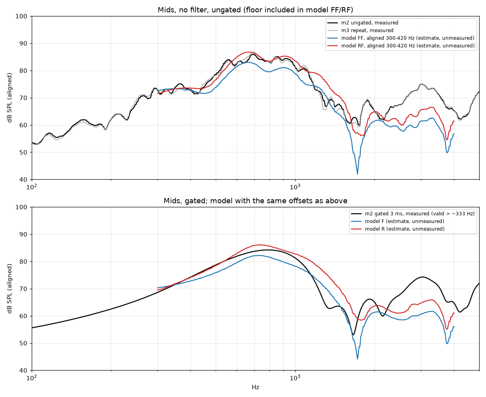
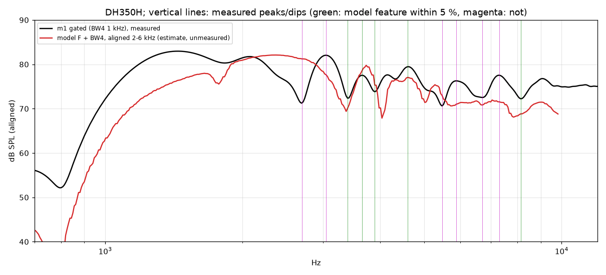
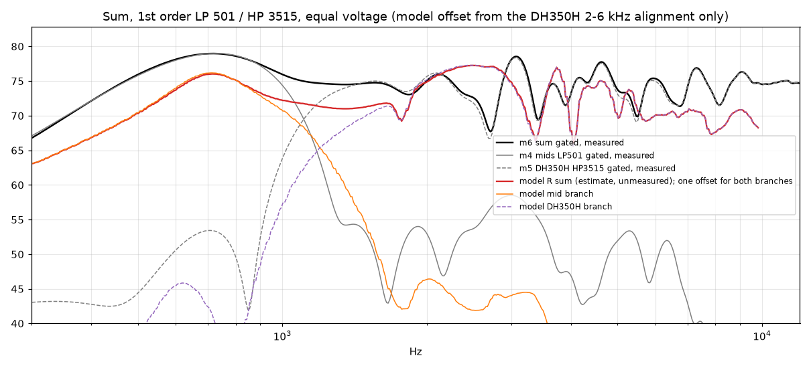
Candidates A and C (below) loaded the compression driver to 1 kHz but beamed too narrow. 107 round shapes (105 new, each with a 20 mm rounded lip, plus A with and without the lip) were then screened in an axisymmetric model, standing free in a closed round body 250 mm across. Two findings: a 250 mm mouth itself narrows the pattern to about 50–70° at 2–2.5 kHz (a mouth-size effect), and above about 8 kHz the beamwidth follows how early the wall opens (both derived from the screen). The best family keeps A's exponential start and then forces the wall open to about 50° from the axis. Proposed winner: A's start to 50 mm, wall about 51° from the axis by about 80 mm, mouth 170 mm across set in the flat 250 mm front, 109 mm deep.
| Loading at 1 kHz (≥ 0.25) | 0.56 (A: 0.84); 0.40–0.78 for a throat ±10 % in diameter, so the real driver exit matters: pass |
|---|---|
| Loading ≥ 0.5 over 1–3 kHz; throat reflection ≤ 0.35 over 1.5–5 kHz | 100 % and 100 %: pass |
| On axis within ±2 dB of its smoothed curve, 1–10 and 1–3 kHz | 100 % and 100 %: pass |
| Beamwidth 80–110° over 2–10 kHz | 89 % (63–101°, below 80° only at 8.5–10 kHz) in the 250 mm body (A: 2 %): pass; but only 49 % in a 353 mm body and 53 % in an infinite baffle, so the taller side of the real 250 × 353 mm front will probably fail, and horizontal against vertical within 15° holds over only 68 %. A 3-D model of the real front is needed before this figure is relied on |
| Beamwidth not widening again from 0.8 kHz | 91 %: pass (A: 70 %) |
| Tilt: 1.3 kHz above 3.5 kHz by 4–8 dB, above 7 kHz by 10–14 dB (draft target; tolerance assumed) | 1.0 and 8.4 dB with the datasheet driver model: fail; no shape in the study passed both. The response is too flat (the top end falls too little); the wider horn is closer than A (−2.5 and 7.0 dB); the horn alone at constant throat velocity gives −0.1 and 1.5 dB, the driver model's roll-off supplies the rest. The driver model is unconfirmed below 1.5 kHz, so this needs a measurement |
| Directivity index, 2–10 kHz | 10.0 dB (A: 13.1 dB) |
Checks: exact test cases, planted defects (all caught in the main solver; one of three not caught in the second solver), mesh convergence, energy balance and a second solver at 0.5, 1, 2 and 4 kHz (within 0.11 dB on axis) pass; no second solver above 4 kHz; results above about 14 kHz indicative; flat throat wavefront and straight driver exit assumed.
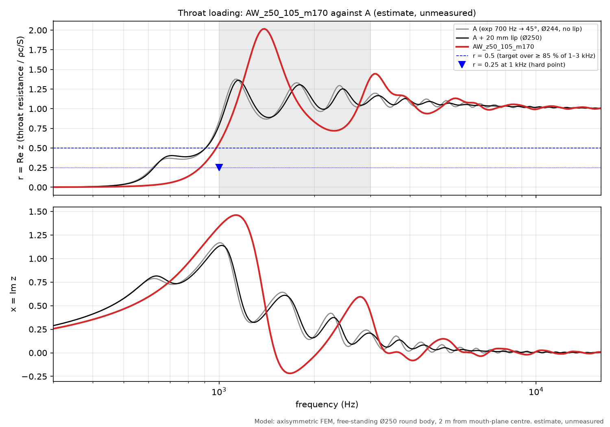
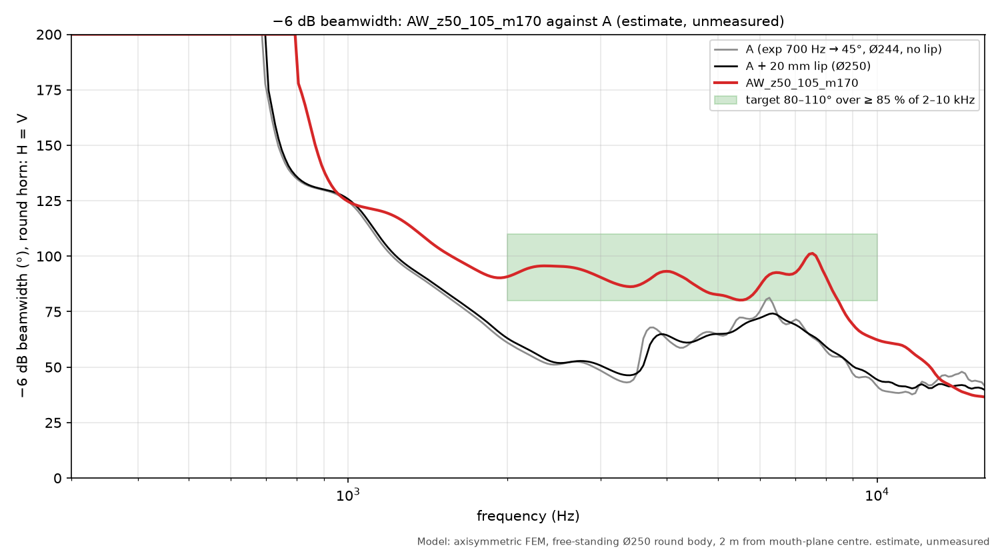
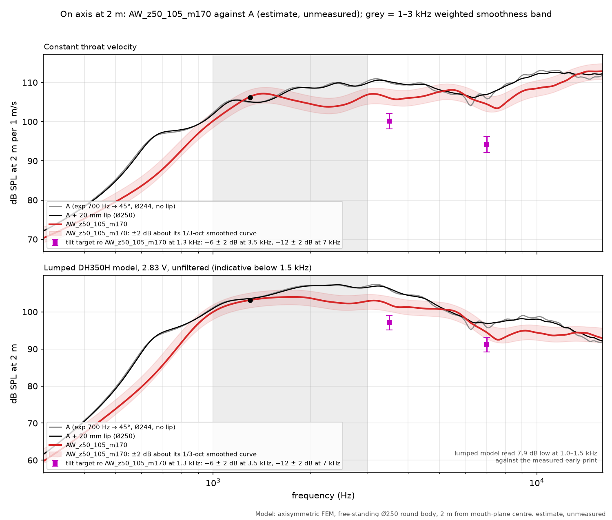
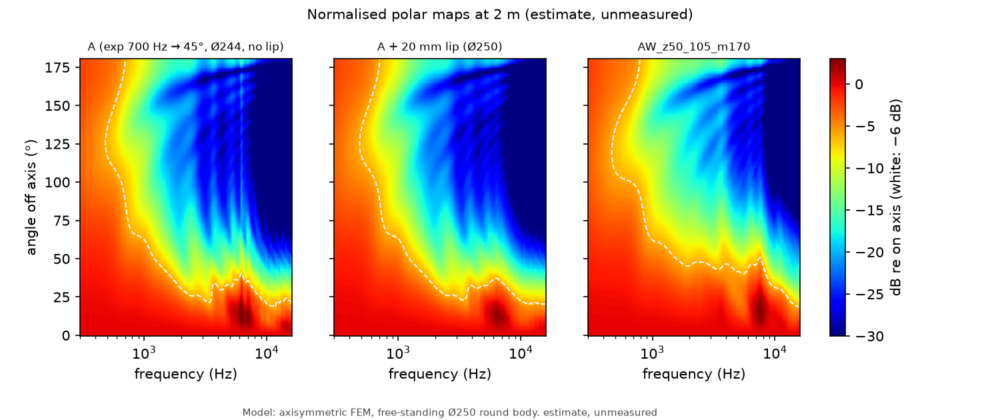
Conditions: axisymmetric finite-element simulation, horn set flush in a closed rigid round body Ø250 mm (the F81 width) with nothing around it, 2 m from the mouth centre, uniform flat source at a Ø25 mm throat (the real exit shape of the driver is not yet known), rigid walls, no air losses. A: exponential flare (700 Hz) opening to 45° walls, 197 mm long. C: same flare to 36° walls, 221 mm. Both mouths Ø244 mm. "A + lip": A with a 20 mm rounded mouth edge ending at Ø250, 5.3 mm shorter.
| Target | A | C | A + lip |
|---|---|---|---|
| Loading at 1 kHz ≥ 0.25 | 0.84 pass | 1.07 pass | 0.79 pass |
| Loading ≥ 0.5, 1–3 kHz | 100 % pass | 100 % pass | 100 % pass |
| |Γ| ≤ 0.35, 1.5–5 kHz | 100 % pass | 100 % pass | 100 % pass |
| On axis ±2 dB of smoothed, 1.5–10 kHz | 99 % pass | 99 % pass | 100 % pass |
| −6 dB beamwidth 80–110°, 2–10 kHz | 2 % (42–81°) fail | 3 % (36–84°) fail | 0 % (45–74°) fail |
| Not narrowing from 800 Hz (±10°) | 70 % fail | 69 % fail | 73 % fail |
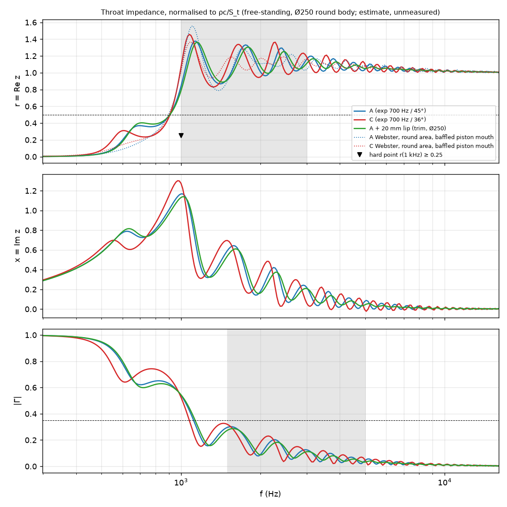
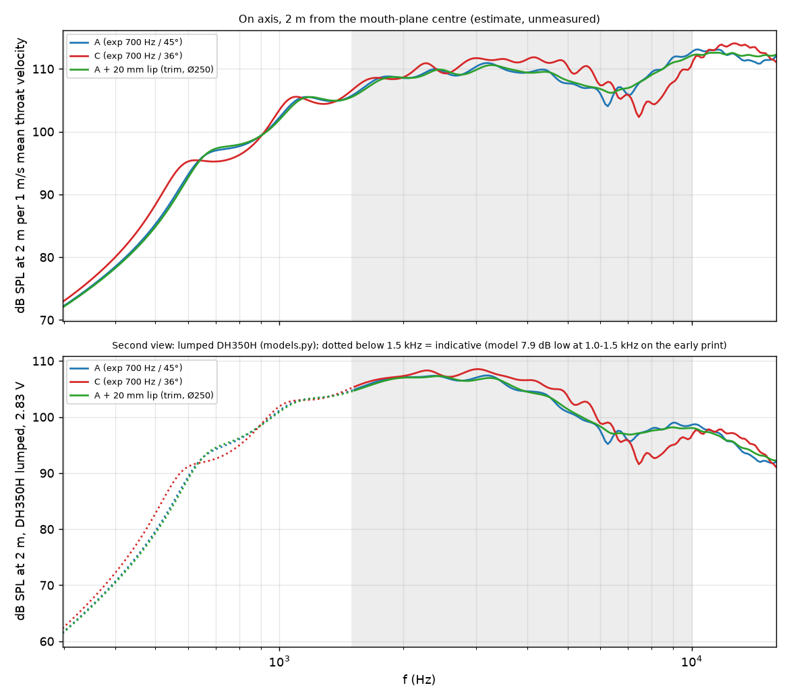
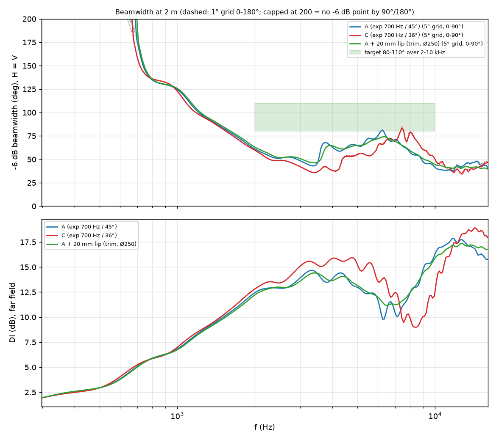
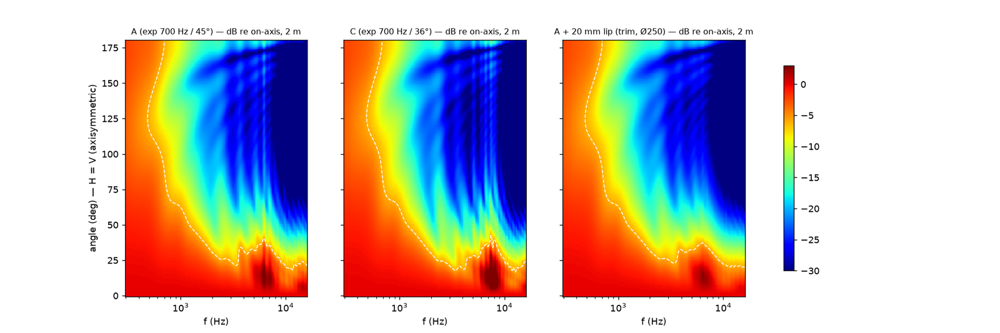
Worked from the measured branch responses of the early print and modelled driver impedances, in answer to the co-designer's questions. Nothing here is final until both drivers' impedances are measured in the horn.
The results below are from the earlier, now parked design line (up to 22 Nov) and the first measurement. They inform the restart but are not the new design.
Square 240 mm mouth, 113 mm horn depth, Ø25 mm throat, walls flaring to about 106° included, four teardrop ports, two mid baffles at 53° to the axis. It fits the 300 mm bed with 4 mm to spare, not the 256 mm bed.
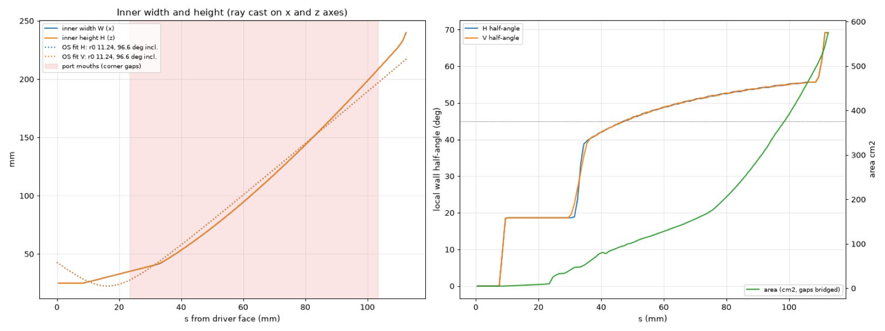


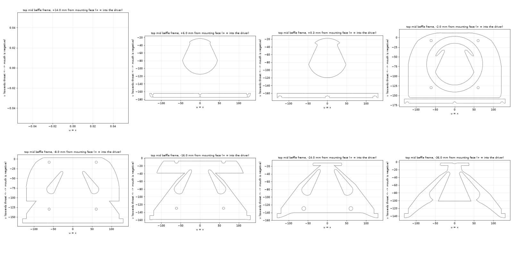
The parametric rebuild (v0.1) was compared with the co-designer's STL surface by surface, both ways. More than 95 % of every surface lies within 0.5–1 mm. Single points reach up to 1.8 mm on the horn surface and 3.4 mm in the mid chambers, around the port edges, pocket ends and chamber entries. These deviations are accepted for the baseline. Air volume agrees to −0.3 %; throat Ø25.000 mm and depth 113.000 mm.


The co-designer put a 13 mm plug inside each cone. Whether it clears the moving cone at maximum excursion (+5.6 mm) depends on the cone shape, so the cone was modelled three times as knowledge improved:
| v0.2 | Shallow spherical cap, about 20 mm deep (datasheet drawing and a first reading). The plug touched the cone before maximum excursion (first contact at about 2.5 mm). |
|---|---|
| v0.3 | Plug lowered 4.4 mm and the recess floor 0.8 mm to restore at least 1.2 mm clearance at maximum excursion. |
| v0.4 | Tek's rough measurement of the real cone (deeper at the centre, concave dust cap, 18 mm surround flush with the frame). The original plug clears maximum excursion by 1.6–2.0 mm (independent check: 1.63 mm with the crest 0.5 mm proud). In the worst-case bound (stiff surround roll 0.5 mm proud) it would touch by 0.2 mm; accepted. |
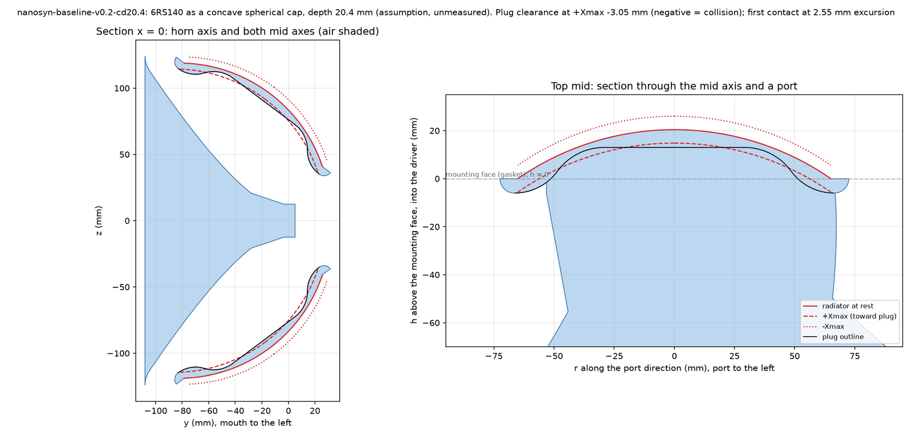
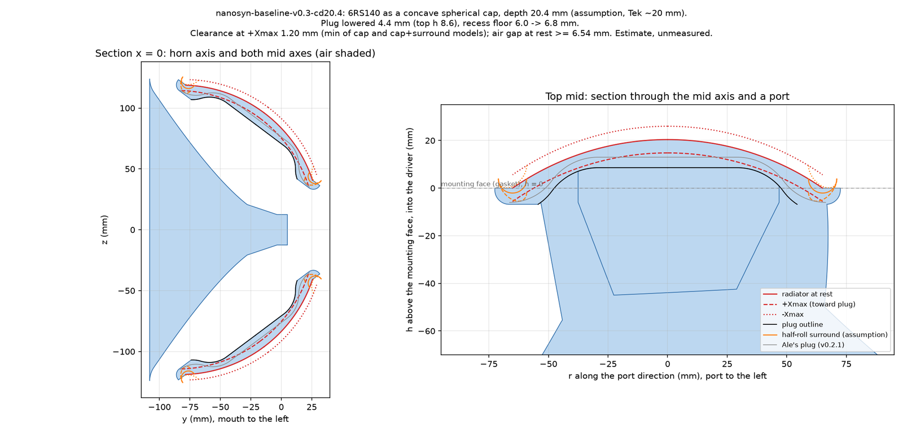

Latest full run (21 Nov): 137 tests passed, 0 failed; 92 registered checks with 135 planted defects, all caught; 0 errors in 88 registered claims. Each check is tried on a deliberately faulty case before it is trusted.

Correction (22 Nov): the horn measured is the co-designer's earlier, smaller "early iteration" print (204 × 157 × 240 mm), not the design our v0.4 model is built from. The model curves below are therefore a different horn and not a check of the model; the check against a simulation of the measured horn itself is reported above (23 Nov). The measured data stand.
Measured at home (mids' backs open, mic on axis at 0.55 m, SPL set roughly; floor reflection at about 3.2 ms). Against the v0.4 model of the later design, levels aligned at one band:
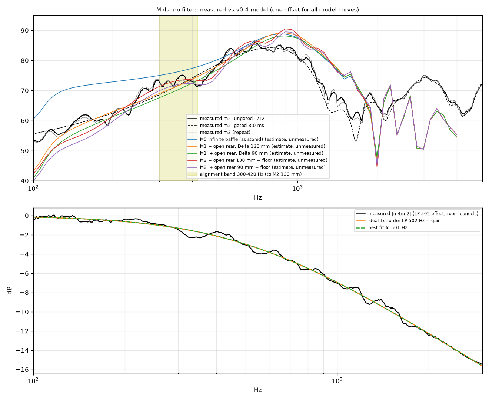
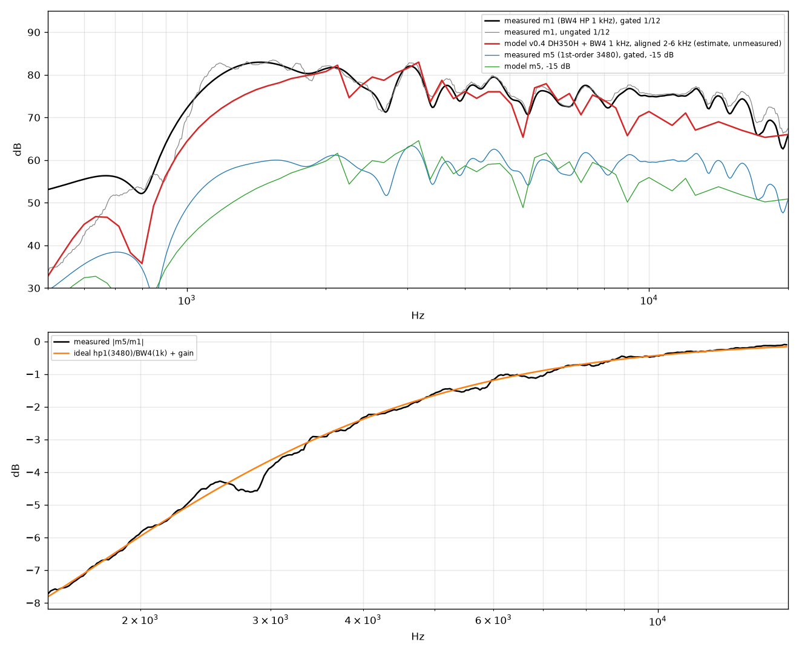
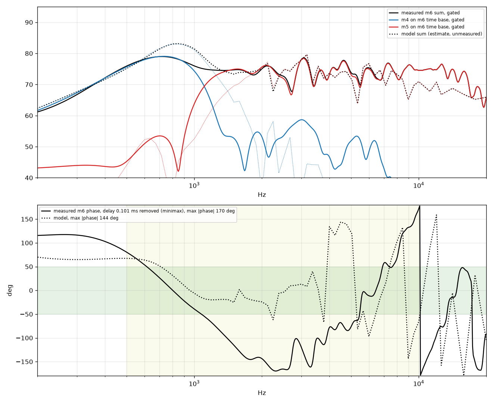
Conditions for every number in this and the following sections: boundary-element simulation with an infinite baffle at the mouth, no air losses (peaks and notches come out sharper and deeper than real), rigid walls and cones, a flat wavefront at the compression-driver exit, simple driver models built from the datasheets, the co-designer's plug and horn as drawn (with small accepted deviations at the port edges). Mid levels at 2.83 V on each mid, 2 m on axis, each mid in an assumed 6 l reflex box tuned to 100 Hz. Two independent solvers and mesh-convergence checks back the numbers quoted.
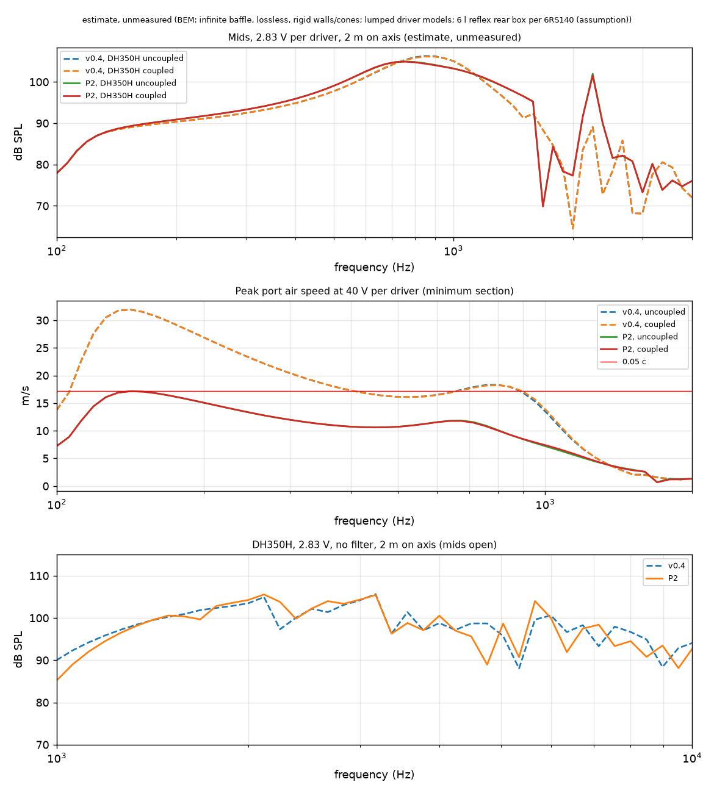
The four M5 heads seated in the mouth-end counterbores do not matter on axis (about 0.25 dB or less, 5–20 kHz) or for coverage. Off axis at 25–30° they add about 0.6 dB of ripple at 16–17 kHz. The small ring gap round each head may add up to about 1 dB near 15 kHz in a model with no losses (real losses should make that much smaller), and about 0.8 dB off axis near 10 kHz, which losses would not reduce much. The gap figures and everything above 14 kHz come from a coarse model and are indicative only. Printed flush caps would remove the effect if wanted.
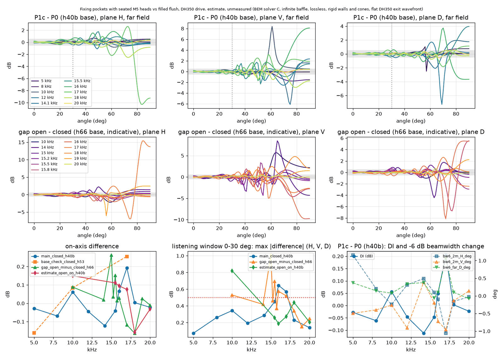
A printable P2 was built from the co-designer's body: ports enlarged, mid baffles moved out 6.6 mm, a 3.5 mm shell added where the bigger ports came within 0.9–1.6 mm of the outer surface. One piece is 260 × 150 × 296 mm (2.79 l of material). A geometry review approved it with changes; an interfaces review rejected it as exported; an independent release gate (28 checks, each tested on deliberately broken copies) fails it on 8 checks, mainly the mid screw fixings at the throat end, the compression driver's fixing type (not yet known), and a split plane through the driver seat. Fixes are decided (see key decisions) and will be applied to whichever port option is printed.
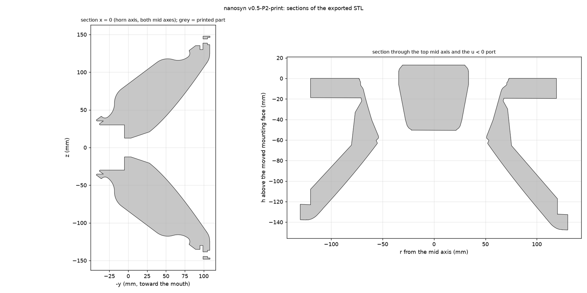
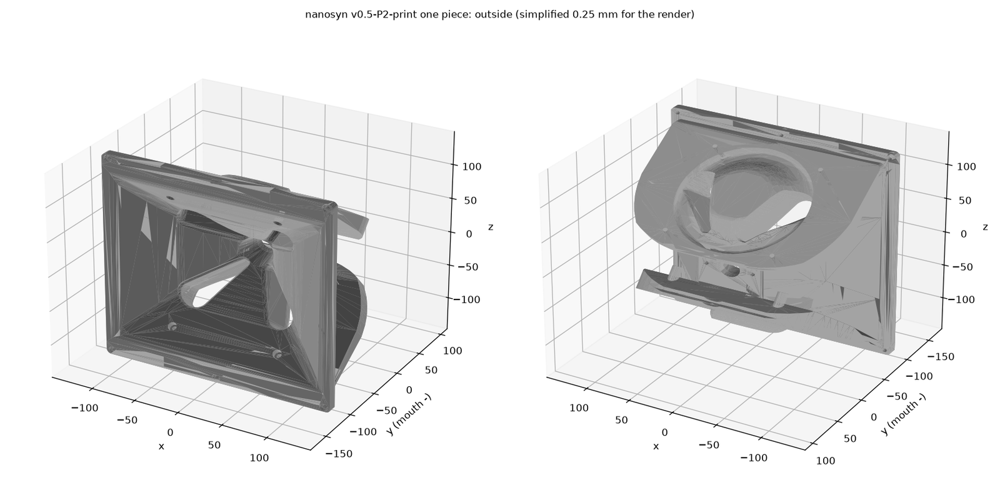
No print settings for the restarted design yet: candidates A and C are simulation models only, with no CAD export, slicer run or print-log entry; every setting for them is not set. The table below is for the parked P2 print test (from its slicer output; generic slicer profile, kept for reference).
| 300 mm-bed printer, one piece | 256 mm-bed printer, 6-piece split | |
| Material / brand | PLA / not set | PLA / not set |
| Nozzle; layer | 0.4 mm; 0.20 mm (0.12 mm suggested for the ports, not sliced) | 0.4 mm; 0.20 mm |
| Walls; top / bottom | 4; 5 / 5 | 4; 5 / 5 |
| Infill | 20 % gyroid | 20 % gyroid |
| Supports | auto, snug, 45°; about 260 cm³, inside horn and ports | auto, 45°; at least 80 cm³ per rear half, 6 cm³ per flange quarter |
| Orientation | mouth face on the bed | rear halves cut face down; flange quarters mouth face down |
| Splits and joints | none (2 mm margin a side on the bed) | 2 rear halves + 4 flange quarters; 14 Ø4 × 16 mm dowels in Ø4.2 holes, epoxy; split to be re-cut clear of the driver seats |
| Temperatures | 215 °C nozzle, 60 °C bed | 215 / 60 °C |
| Speed | 60 perimeter, 40 external, 120 infill mm/s; 15 mm³/s cap | same |
| Brim / skirt | 0 / 0 (no room) | not set |
| Slicer profile | generic; printer profile not set | generic; printer profile not set |
| Estimated time, mass | 4 d 2 h, 1572 g | rear halves about 46 h and 716 g each; quarters 2 h 55 min and 47 g each |
Sources: Danley, Synergy and Unity horn patents (weight 4); Faital PRO, 6RS140 data sheet (weight 4); Waslo, Synergy Calc v5 manual (weight 3); Danley Sound Labs white paper (weight 3); Salvatti, Devantier and Button, port air-flow study (weight 4); B&C, DH350H data sheet (weight 4); Keele, "What's so sacred about exponential horns?" (weight 4); Funktion-One, F81 user guide (weight 3). Renders of the co-designer's model are shown with consent.